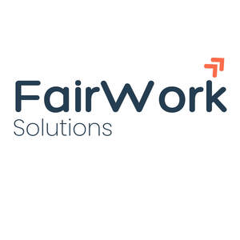

Trade Mark Journal No.2025/048 28 November 2025
UK00004295148 14 November 2025 (35,42)

- Class 35
- Accounting services; Administrative data processing; Administrative services relating to payroll management; Administration and management services relating to employment and compliance; Administration, calculation and management of employee wages, salaries, pensions, and entitlements; Analysis of business and market trends, data and statistics; Billing services; Bookkeeping services; Business administration, advisory, consultancy, organisation and management; Business analysis; Business intelligence services; Business intermediary and networking services; Business management of logistics for others; Business performance management services; Business project management services; Business planning and research services; Business records management; Business strategy and development services; Commercial information services; Commercial intermediation for business purposes; Commercial management; Competitive intelligence services; Computerised data management; Cost analysis and accounting; Cost benefit analysis; Data collection; Data compilation; Data entry; Data file administration; Data inputting services; Data management; Data processing; Data recording; Data retrieval; Data systemisation; Data transcription; Data verification; Database management; Development of customised personnel management materials for others; Employee record administration and management services; Evaluation of personnel requirements; Financial auditing and records management; Human resources management; Invoicing services; Market analysis and intelligence services; Office functions; Payroll assistance, preparation, processing and management; Personnel management; Price comparison services; Procurement services; Sales management services; Statistical analysis and reporting services for business purposes; Systemisation of information and data into computer databases; Tracking and monitoring compliance for business purposes; information, consultancy and advice in relation to the foregoing.
- Class 42
- Application service provider [ASP] services; Cloud computing services; Coding, decoding, encrypting, storing, converting, recovering, duplicating, researching, migrating and compressing data; Computer project management services; Computer services; Design services; Design, development, updating, programming, rental and maintenance of computer databases, systems, online calculator, online dashboards, computer hardware, and software; Design, development, updating, programming, rental and maintenance of computer software for the evaluation, visualisation and calculation of data; Design, development, updating, programming, rental and maintenance of online calculators; Design, development, updating, programming, rental and maintenance of online calculators, computer systems and software for payroll and wage management; Encryption, decryption and authentication of information, messages and data; Hosting and rental of software; Hosting of databases; Hosting platforms on the Internet; Hosting of digital content, namely, on-line journals and blogs; Hosting of web portals and weblogs; Information technology services; Installing web pages on the internet for others; Integration of artificial intelligence and machine learning systems; Online provision of web-based applications (non- downloadable); Online provision of web-based software (non-downloadable); Platform as a service [PaaS]; Product research and development; Providing online, non-downloadable software; Providing online, non-downloadable application programming interface (API) software; Providing temporary use of non-downloadable software applications accessible via a web site; Quality assurance, auditing, assessment, control and testing services; Research and development; Software as a service [SaaS]; Software as a service [Saas] for employee administration and management; Software as a service [Saas] for the administration, management, calculation and tracking of employee-related data, wages, salaries, pensions, and entitlements; Software as a service [Saas] for employment and compliance purposes; Technical data analysis; Technological services; Website automation, design, creation, development and hosting services; information, consultancy and advice in relation to the foregoing.
FAIR WORK SOLUTIONS LTD
Representative: LEGALVISION LAW UK LTD